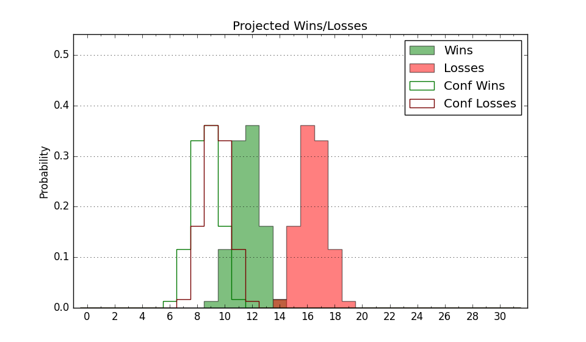

| Home | Game Probabilities | Conferences | Preseason Predictions | Odds Charts | NCAA Tournament |
| City: | Bozeman, Montana | |
| Conference: | Big Sky (6th)
| |
| Record: | 6-7 (Conf) 9-14 (Overall) | |
| Ratings: | Comp.: -6.5 (241st) Net: -6.6 (243rd) Off: 101.2 (236th) Def: 107.8 (230th) SoR: 0.0 (158th) |
| Remaining | ||||||
|---|---|---|---|---|---|---|
| Date | Opponent | Win Prob | Pred. | |||
| 2/22 | Portland St. (249) | 65.6% | W 73-69 | |||
| 2/24 | Sacramento St. (333) | 85.5% | W 73-61 | |||
| 2/29 | @ Idaho (312) | 52.7% | W 70-69 | |||
| 3/2 | @ Eastern Washington (130) | 16.3% | L 71-83 | |||
| 3/4 | Weber St. (135) | 40.2% | L 69-72 | |||
| Previous | Game Score | |||||
| Date | Opponent | Win Prob | Result | Off | Def | Net |
| 11/11 | @Seattle (121) | 14.3% | L 68-71 | 6.8 | 13.6 | 20.4 |
| 11/16 | @California (109) | 12.5% | W 63-60 | -0.2 | 22.1 | 22.0 |
| 11/20 | Green Bay (203) | 57.6% | L 53-54 | -28.1 | 19.8 | -8.2 |
| 11/22 | UC Riverside (247) | 65.4% | W 69-68 | 3.9 | -3.2 | 0.7 |
| 11/26 | Long Beach St. (158) | 48.3% | L 69-75 | -3.0 | -5.1 | -8.1 |
| 12/5 | @Washington (70) | 7.6% | L 61-85 | -6.3 | 3.2 | -3.1 |
| 12/19 | Southern Utah (246) | 65.2% | W 89-88 | 1.2 | -6.1 | -4.9 |
| 12/22 | @Cal St. Northridge (217) | 31.9% | L 70-82 | -5.0 | -3.3 | -8.3 |
| 12/28 | @Idaho St. (250) | 36.0% | W 74-66 | 13.5 | 3.5 | 17.0 |
| 12/30 | @Weber St. (135) | 16.5% | L 64-86 | -4.8 | -14.4 | -19.2 |
| 1/3 | Oral Roberts (254) | 65.8% | L 76-82 | -7.4 | -7.6 | -15.0 |
| 1/6 | @South Dakota St. (164) | 22.5% | L 61-89 | -13.9 | -10.6 | -24.5 |
| 1/11 | Northern Arizona (318) | 80.6% | W 79-50 | 9.5 | 24.5 | 34.0 |
| 1/13 | Northern Colorado (195) | 56.3% | W 90-81 | 8.8 | -0.2 | 8.6 |
| 1/20 | Montana (151) | 46.0% | L 77-87 | 4.0 | -17.1 | -13.2 |
| 1/22 | Idaho St. (250) | 65.7% | W 77-70 | 13.5 | -5.7 | 7.8 |
| 1/25 | @Sacramento St. (333) | 63.4% | W 70-62 | 6.3 | 0.8 | 7.1 |
| 1/27 | @Portland St. (249) | 35.9% | L 91-94 | 19.3 | -15.9 | 3.3 |
| 2/1 | Eastern Washington (130) | 39.8% | W 70-60 | -9.4 | 25.0 | 15.7 |
| 2/3 | Idaho (312) | 79.1% | L 75-81 | -1.0 | -15.6 | -16.6 |
| 2/8 | @Northern Colorado (195) | 27.4% | L 70-73 | -4.2 | 11.3 | 7.2 |
| 2/10 | @Northern Arizona (318) | 55.0% | L 71-76 | -9.7 | 1.7 | -8.1 |
| 2/17 | @Montana (151) | 20.0% | L 69-88 | 6.6 | -19.4 | -12.8 |
| Stats & Trends | |||||
|---|---|---|---|---|---|
| Current | Day | Week | Month | Season | |
| Composite | -6.5 | -0.0 | -0.7 | -0.3 | -3.6 |
| Comp Rank | 241 | -- | -7 | -2 | -46 |
| Net Efficiency | -6.6 | -0.0 | -0.7 | +0.2 | -- |
| Net Rank | 243 | -- | -8 | -- | -- |
| Off Efficiency | 101.2 | -0.0 | +0.2 | +2.0 | -- |
| Off Rank | 236 | +2 | +7 | +28 | -- |
| Def Efficiency | 107.8 | -0.0 | -0.9 | -1.8 | -- |
| Def Rank | 230 | -2 | -18 | -19 | -- |
| SoS Rank | 253 | +3 | +25 | +8 | -- |
| Exp. Wins | 11.6 | -0.0 | -0.3 | -0.9 | -3.5 |
| Exp. Conf Wins | 8.6 | -0.0 | -0.3 | -0.9 | -1.6 |
| Conf Champ Prob | 0.0 | -- | -0.0 | -1.4 | -15.4 |

| Advanced Stats | ||
|---|---|---|
| Stat | Value | Rank |
| Off Eff FG % | 0.512 | 156 |
| Off Ast Ratio | 0.136 | 195 |
| Off ORB% | 0.195 | 354 |
| Off TO Rate | 0.165 | 291 |
| Off FT Ratio | 0.310 | 231 |
| Def Eff FG % | 0.530 | 272 |
| Def Ast Ratio | 0.143 | 186 |
| Def ORB% | 0.283 | 199 |
| Def TO Rate | 0.159 | 94 |
| Def FT Ratio | 0.418 | 331 |